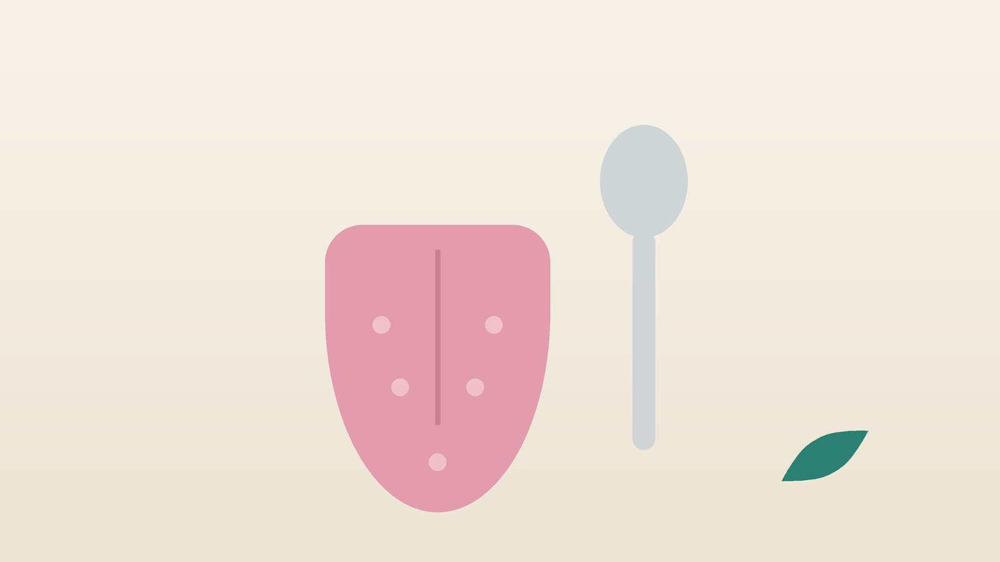

음식 맛이 안 느껴지거나 이상하다면, 미각장애의 원인과 한방 관리

내 입맛, 이런 변화가 있나요?
- 좋아하던 음식이 밍밍하고 아무 맛이 없게 느껴진다
- 예전보다 소금이나 설탕을 훨씬 많이 넣게 되었다
- 아무것도 먹지 않았는데 입에서 쓴맛, 쇠맛, 짠맛이 돈다
- 냄새도 예전처럼 잘 맡지 못한다
- 입이 자주 마르고 혀가 따끔하거나 하얗게 덮여 있다
- 새로 먹기 시작한 약이 있거나 최근 감기·코로나를 앓았다
이 체크리스트는 진단 도구가 아닙니다. 맛의 변화가 몇 주 넘게 이어지면 이비인후과에서 미각과 후각 검사를 받아 보세요.
119나 다른 진료가 먼저 필요한 신호
- 맛이 이상하면서 갑자기 한쪽 얼굴이나 팔다리에 힘이 빠지고, 말이 어눌하다
- 혀 한쪽 맛이 사라지면서 같은 쪽 눈이 잘 감기지 않고 입꼬리가 처진다
- 혀나 입 안에 2주 넘게 아물지 않는 헐은 곳이나 덩어리가 있다
- 입맛이 없어 체중이 눈에 띄게 줄거나, 삼키기가 어렵다
- 냄새와 맛이 함께 둔해지면서 기억력이 떨어지거나 손이 떨린다
첫째 신호는 뇌졸중일 수 있으니 즉시 119를 부르세요. 둘째는 안면신경마비일 수 있어 서둘러 진료를 받고, 아물지 않는 상처는 이비인후과나 치과, 체중 감소는 내과, 기억력 저하와 떨림은 신경과 진료를 먼저 받으세요.
맛은 왜 둔해지거나 바뀌나요?
혀와 입천장의 맛봉오리가 맛을 느끼고, 그 신호는 얼굴과 혀의 신경을 타고 뇌로 갑니다. 그런데 음식의 풍미는 대부분 코 뒤쪽으로 올라가는 냄새에서 오기 때문에, 냄새를 못 맡으면 '맛이 없다'고 느끼게 됩니다. 단맛과 짠맛은 아는데 음식 고유의 맛만 사라졌다면 후각 문제일 가능성이 큽니다.
- 감염 뒤: 감기나 코로나 뒤 냄새와 맛이 함께 떨어지는 경우가 흔합니다.
- 아연·영양 부족: 맛봉오리는 계속 새로 만들어지는데, 아연이나 비타민 B12, 철이 부족하면 회복이 더딥니다.
- 약: 일부 항생제, 혈압약, 항진균제, 항암제, 갑상선 약은 쓴맛이나 쇠맛을 만들 수 있습니다.
- 입 안 환경: 침이 줄면 맛 성분이 녹지 않습니다. 혀 백태, 곰팡이 감염, 잇몸병, 구강작열감도 원인입니다.
- 몸 전체의 병: 당뇨, 신장·간 질환, 갑상선 기능 저하, 흡연, 임신 초기에도 맛이 변할 수 있습니다.
이비인후과에서는 맛 물질이나 약한 전기 자극으로 미각을 검사하고, 혈액 검사로 아연과 혈당, 신장 기능을 확인합니다.
한의학은 미각장애를 어떻게 보나요?
『영추』 맥도(脈度)편은 '심(心)의 기운은 혀로 통해, 심이 조화로우면 혀가 다섯 가지 맛을 안다'고 하고, '비(脾)의 기운은 입으로 통해, 비가 조화로우면 입이 곡식 맛을 안다'고 적었습니다. 맛을 아는 힘을 심장과 비위의 조화에서 찾은 것입니다.
입이 싱겁고 맛을 모르는 것을 구담(口淡), 입이 쓴 것을 구고(口苦)라 하여 증상을 나눴습니다. 구담은 비위의 기운이 약한 것으로, 구고는 간담에 열이 쌓인 것으로, 입이 마르고 맛이 둔한 것은 진액이 부족한 것으로 봅니다.
나의 미각장애는 어떤 유형일까?
이비인후과 검사로 다른 원인을 확인한 뒤 쓰는 한의학적 구분입니다.
1. 비위기허(脾胃氣虛) 입이 싱거운 유형
- 이런 분에게 많아요
- 입이 짧고 소화가 약하며 쉽게 지치는 분
- 나타나는 모습
- 무엇을 먹어도 싱겁고 입맛 자체가 없다
- 함께 오는 몸의 신호
- 식후 더부룩함, 무른 변, 기운 없음
- 진찰에서 보이는 모습
- 혀가 옅고 가장자리에 잇자국, 맥이 약함
- 치료 방향
- 비위의 기운을 북돋아 입맛을 살리는 방향 (향사육군자탕 계열)
- 오늘부터 해 볼 것
- 찬 음료 대신 따뜻한 국물로 식사를 시작해 보세요.
2. 간담습열(肝膽濕熱) 입이 쓴 유형
- 이런 분에게 많아요
- 술자리가 잦고 스트레스가 많은 분
- 나타나는 모습
- 아침에 일어나면 입이 쓰고 텁텁하다
- 함께 오는 몸의 신호
- 옆구리 답답함, 짜증, 소변 색이 진함
- 진찰에서 보이는 모습
- 혀가 붉고 누런 이끼가 두꺼움, 맥이 팽팽함
- 치료 방향
- 간담의 열과 습을 걷어 내는 방향 (용담사간탕 계열)
- 오늘부터 해 볼 것
- 저녁 술자리를 줄이고 기름진 안주를 피하세요.
3. 음허진상(陰虛津傷) 입이 마른 유형
- 이런 분에게 많아요
- 중년 이후이거나 입마름을 부르는 약을 드시는 분
- 나타나는 모습
- 입이 바짝 마르고 혀가 따끔하며 맛이 둔하다
- 함께 오는 몸의 신호
- 목마름, 손발 화끈거림, 잠이 얕음
- 진찰에서 보이는 모습
- 혀가 붉고 갈라지며 이끼가 적음
- 치료 방향
- 진액을 채워 입 안을 적시는 방향 (사삼맥문동탕 계열)
- 오늘부터 해 볼 것
- 물을 한 번에 많이 마시기보다 자주 조금씩 머금었다 삼키세요.
4. 폐기허(肺氣虛) 감염 뒤 둔해진 유형
- 이런 분에게 많아요
- 감기나 코로나 뒤 냄새와 맛이 함께 떨어진 분
- 나타나는 모습
- 단맛·짠맛은 알지만 음식 고유의 풍미가 사라졌다
- 함께 오는 몸의 신호
- 코막힘, 쉽게 피로함, 식은땀
- 진찰에서 보이는 모습
- 혀가 옅고 맥이 힘이 없음
- 치료 방향
- 폐와 비의 기운을 북돋아 회복을 돕는 방향 (보중익기탕 계열)
- 오늘부터 해 볼 것
- 향이 뚜렷한 재료를 하루 두 번 맡아 보는 후각 훈련을 함께 하세요.
한의원에서는 어떻게 진찰하나요?
- 맛과 냄새 구분: 단맛·짠맛을 아는지, 냄새도 함께 떨어졌는지, 언제부터였는지 여쭙습니다.
- 약과 병력: 복용 중인 약 목록과 당뇨·신장·갑상선 질환, 최근 감염을 확인합니다.
- 입 안 살피기: 혀의 색과 이끼, 갈라짐, 입마름 정도와 헐은 곳이 있는지 봅니다.
- 검사 결과: 미각·후각 검사와 아연, 혈당 등 혈액 검사 결과를 보고, 없으면 검사를 권합니다.
침·약침·한약 치료는 어떻게 하나요?
1. 침 치료
- 염천(廉泉): 턱 아래 목 앞 한가운데의 오목한 곳으로, 혀 주변을 돌볼 때 얕게 놓습니다.
- 지창(地倉): 입꼬리에서 바깥으로 손톱 반 개쯤 떨어진 자리입니다.
- 합곡(合谷): 엄지와 검지 사이 손등의 살이 도톰한 곳으로, 얼굴과 입의 기운을 돌릴 때 씁니다.
- 족삼리(足三里): 무릎 바깥 아래에서 손가락 네 개 너비 아래, 정강이뼈 바깥으로 비위를 돕습니다.
임신 중에는 합곡과 삼음교를 쓰지 않고 다른 혈자리로 바꿉니다.
2. 약침
체질에 맞는 약침을 턱 아래와 손발의 혈자리에 소량 시행해 입 주변의 순환을 돕습니다. 임신 중이라면 주수와 상태를 확인한 뒤 피해야 할 부위를 제외하고 시행합니다.
3. 한약
유형에 따라 탕약을 위주로 처방하며, 아연이 부족하다면 식사와 보충을 함께 챙기도록 안내합니다. 미각장애에 대한 한약 연구는 아직 규모가 작아, 원인 치료를 바탕에 두고 회복을 돕는 방향으로 씁니다. 복용 중인 약은 알려 주시면 확인해 처방합니다. 혈압약, 당뇨약, 갑상선 약 때문에 맛이 변한 것 같아도 담당 의사와 상의 없이 끊지 마세요. 임신 중이거나 당뇨 병력이 있다면 진료 때 꼭 알려 주세요. 확인 후 안전한 약재로 처방합니다. 한약은 원장이 원내 탕전실에서 약재 선별부터 달이는 과정까지 직접 관리하며, 10일분씩 처방해 복용 경과를 보고 약재 구성과 양을 조절합니다.
원장님이 네이버 블로그에 진료 이야기와 건강 정보를 꾸준히 올리고 있습니다. 더 많은 이야기는 블로그에서 확인해 보세요.
블로그 보기치료는 어떤 순서로 진행되나요?
- 원인 확인 이비인후과 미각·후각 검사와 혈액 검사로 다른 병과 약의 영향을 살핍니다.
- 첫 한방 진료 입 안과 체질을 살펴 유형을 나누고, 맛 일기 쓰는 법을 안내합니다.
- 4~8주 침·약침과 한약을 함께 하며 맛이 돌아오는 정도를 0~10점으로 기록합니다.
- 유지기 맛이 돌아오면 치료 간격을 넓히고 식사와 구강 관리를 이어 갑니다.
감염 뒤 생긴 경우는 회복에 몇 달이 걸리기도 하며, 원인과 기간에 따라 진찰 후 개인별로 안내합니다.
입맛을 되살리는 생활 관리
- 입 안 적시기: 물을 자주 머금고, 무설탕 껌으로 침이 나오게 도와 보세요.
- 혀 부드럽게 닦기: 양치 뒤 혀 클리너로 백태를 살살 걷어 내되, 세게 긁지는 마세요.
- 아연 챙기기: 굴, 소고기, 달걀, 콩, 견과류를 식단에 넣어 보세요. 영양제는 결핍을 확인한 뒤 정해진 양만 드세요.
- 맛 대신 다른 감각: 온도, 식감, 색, 향신료로 식사의 즐거움을 살려 보세요.
- 담배 끊기: 흡연은 맛봉오리와 냄새 신경을 모두 둔하게 합니다.
다른 진료가 함께 필요한 경우
- 냄새를 거의 못 맡는다면 이비인후과에서 코 내시경과 후각 검사를 받으세요.
- 입마름이 심하고 눈도 함께 마르면 쇼그렌증후군 같은 질환을 류마티스내과에서 확인해 보세요.
- 혀가 하얗게 덮이고 따갑다면 곰팡이 감염일 수 있어 치과나 이비인후과 진료를 받으세요.
- 입맛이 없고 의욕이 떨어진 채 몇 주가 지나면, 증상이 가벼운 경우 한약 치료를 중심으로 관리하기도 하지만 깊다면 정신건강의학과 치료를 함께 받으세요.
자주 묻는 질문 Q&A
- Q1. 맛을 못 느끼는데 코 문제일 수 있나요?
- 네, 음식 풍미는 대부분 냄새에서 오기 때문에 후각이 떨어지면 맛이 없다고 느낍니다.
- Q2. 코로나 뒤 맛이 이상해요. 돌아오나요?
- 많은 분이 몇 주에서 몇 달 사이 회복되지만 기간은 사람마다 다릅니다.
- Q3. 아연을 먹으면 바로 좋아지나요?
- 아연이 부족한 분에게 도움이 될 수 있지만, 근거가 강하지 않고 과하게 먹으면 구리 결핍이 올 수 있습니다.
- Q4. 입에서 쇠맛이 계속 나요.
- 새로 시작한 약, 잇몸병, 역류, 임신 초기 등을 확인해 보세요.
- Q5. 나이가 들면 맛이 떨어지나요?
- 나이와 함께 조금씩 둔해질 수 있지만, 갑작스러운 변화는 검사를 받으세요.
- Q6. 음식을 짜게 먹게 돼요.
- 혈압에 부담이 되니 소금 대신 식초나 향신료로 맛을 더해 보세요.
- Q7. 어린이도 미각장애가 생기나요?
- 드물지만 생길 수 있으며, 소아는 약침 없이 피부에 붙이는 소아 스티커침과 쓴맛이 덜한 한약으로 진료합니다.
- Q8. 입맛을 돌리는 데 눌러 볼 혈자리가 있나요?
- 정강이 바깥의 족삼리혈을 엄지로 1~2분 지그시 눌러 보세요. 얼굴이 처지거나 말이 어눌하면 바로 119를 부르세요.
문원열 대표원장한의사 · 365스마일한의원
임상 경력 15년, 인천 서구 가정동에서 개원 후 10년째 진료하고 있으며, FCST 턱관절학회·연부조직학회·침도학회 등에서 활동합니다. 아픈 곳만이 아니라 증상의 원인을 찾아 진료합니다.
진료 안내
- 진료시간
- 평일 09:00~20:00 (점심시간 13:00~14:00, 접수 마감 19:30)
토·일·공휴일 09:00~15:00 (접수 마감 14:30) - 주소
- 인천광역시 서구 가경주로 46, 2층 (가정동)
인천2호선 가정중앙시장역 인근
영상으로 길 안내 보기 → - 주차
- 한의원 건물 바로 앞 1층 도원주차장
- 예약
- 예약 바로가기 또는 전화 예약
진료시간은 사정에 따라 바뀔 수 있으니 방문 전 전화로 확인해 주세요.
함께 읽으면 좋은 칼럼
건강 칼럼 전체 보기 →


참고 자료
- Hummel T, Landis BN, Hüttenbrink KB. Smell and taste disorders. GMS Curr Top Otorhinolaryngol Head Neck Surg, 2011
- Kumbargere Nagraj S, et al. Interventions for managing taste disturbances. Cochrane Database Syst Rev, 2017
- 『영추(靈樞)』 맥도(脈度)
- 질병관리청 국가건강정보포털 — 원문
※ 이 글은 일반적인 건강 정보이며, 개인의 상태에 따라 치료 방법과 결과는 다를 수 있습니다. 정확한 진단과 치료는 진료를 통해 결정됩니다. 침·약침 시술 후 드물게 멍, 통증 등이 생길 수 있습니다.